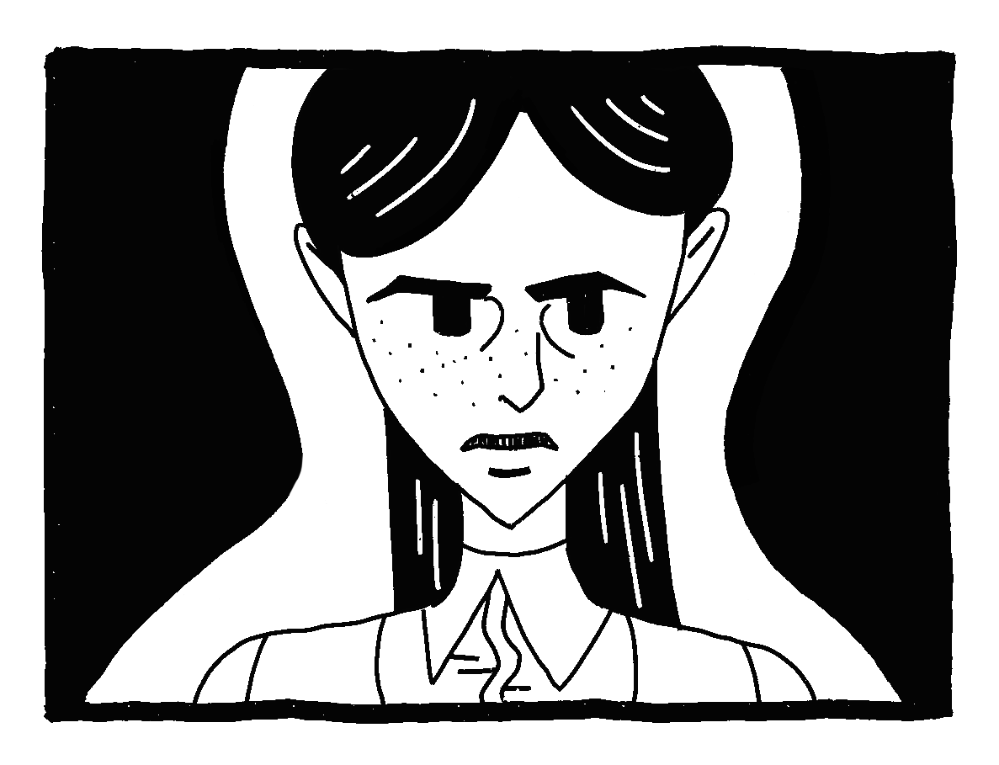

すくいの扉
冷たい風が、少年の頬を撫でた。乾いた空気の中、太陽がコンクリートの地面を照らし、瓦礫の間には細長い影が落ちている。七歳の少年ジオは、その道を黙々と歩いていた。
ジオは薄汚れた布切れのような服を着ている。かつて真っ白だったシャツは色あせ、袖口はほどけていた。肩にかけている小さな鞄の中には、完全食のパックと、わずかに水が入った水筒、そしてライターが入っていた。鞄の底には埃砂が積もっている。ジオは何も考えていなかった。ただひたすらに北へ向かい、安全な場所と言われる地を目指して歩くことだけが、彼にとってすべてだった。
今は争いの最中だった。瓦礫に覆われたこの場所はかつて、白く美しい街だった。今ではくすんだ色に染まり、その輝きを失った。かわりに、地面のあちこちに落ちたガラスの破片がきらきらと光っている。ジオは裸足でその破片を踏みしめ、足裏を血で滲ませながらも、気にせず歩き続けていた。ジオは痛覚がなかった。顎を上げて、じっと遠くを見据え、口笛を吹きながらジオは歩き続けた。遠くから聞こえる鈍い爆撃の音がこだました。その音が自分に近づいているのか、遠ざかっているのか、ジオにはどうでもいいことだった。
しばらく歩くと、生きている人間を見つけた。黄色のワンピースを着た少女だった。残された家の壁に寄りかかり、足を投げ出して座っている。彼女は空を見上げ、虚な目をしていた。そんな彼女の様子をジオは気にかけた。彼女に食べ物を分けて、一緒に北へ向かおうと考えた。
「ねえ、こんなところで何してるの？」
ジオは明るい笑顔で声をかけると、少女はジオを見て眉をしかめた。少女の返事はなかった。耳が遠いのかと思い、ジオはさらに大きな声で続けた。
「早くここから逃げたほうがいいよ」
「あっちへいって」
少女は強い口調で答えた。ジオは予想外の返事に動揺しながらも、続けた。
「でも、ここは危ないよ。僕はこのまま北へ行くんだ。少し遠いけど、その先に避難場所があるよ。君も急いだほうがいい」
ジオがそう言うと、少女はまた黙り込んでしまった。少女のぶっきらぼうな態度に頭を悩ませたジオは、諦めてその場を離れることにした。ジオは再び北へ向かって歩き出しした。
ジオは少女の印象が頭から離れなかった。彼女はきっと、この状況に心を病んでしまい、気持ちが荒んでいたのだろう。もしかすると今頃彼女は寂しい思いをしているかもしれない。置いていくべきではなかった、そんな後悔がよぎり、もやもやした気持ちは少しずつ膨れ上がっていった。ジオは気持ちを紛らわせようと口笛を吹くも、しばらくしてやめてしまった。
ジオは、うつむきながら理想の世界を思い描いた。誰も傷つかない世界。お腹を満たせて、皆が自由に過ごし、家族や友人と一緒に笑い合う温かい日々。今となっては、その当たり前の生活が、天国のように遠かった。
歩いていくうちにあたりはだんだん暗くなり、ぽつぽつと小雨が降り出した。空腹と疲れが重なり、ジオは不安が押し寄せた。ジオは鞄から完全食のパックを取り出し、少し口に含んだ。そして水筒の水を一口飲んで、再び歩き出した。
すると、不思議な光景がふと彼の目に飛び込んだ。ぽつんと立つ一枚の扉。周囲には何もなく、ただその扉だけが立っている。緑色の木製の扉で、取っ手がかすかに光っている。ジオはその異様な存在に引き寄せられるように、おそるおそる近づいた。
ジオは正面に手を伸ばし、そっと取っ手を掴んだ。扉をわずかに開けると、その隙間から光がこぼれた。そこから見えたのは、生い茂る草原と、色鮮やかな果物が実った木々。ジオはその光景に心を躍らせた。この扉の向こうには、ここよりきっと楽しくて、幸せな場所に違いない。ジオは輝かせた目で、勢いよく扉を開いた。
そこには美しい森が広がっていた。草木が柔らかく風に揺れている。よく目を凝らすと、小さな色とりどりの花々が咲いているのが見えた。空気は段違いに澄んでいて、森の木の枝にはおいしそうな果物がたわわに実り、空からは鳥たちのさえずりが聞こえた。おとぎ話のような景色に、ジオは息を呑んだ。
後ろを振り返ると、扉は消えていた。あの扉は自分を助けてくれたのだ。そう思ったジオはその扉を『すくいの扉』と呼ぶことにした。ジオは前を向き、口笛を拭きながら草の上を進んでいった。
昼間の森はとても心地よかった。木の実を摘み取り口に含むと、甘い果汁がジオの腹を満たした。ジオは鞄から完全食を取り出して川のほとりに捨てた。さらに歩くと、透き通った川が流れており、ジオはその水をすくい上げ喉を潤した。そのまま体と汚れた服も洗い、空だった水筒に水を満たした。それから、魚を捕まえる方法を思いついた。服を広げて巧みに魚を捕まえ、集めた枝とライターで火を起こし、焼いて魚を食べた。
日が暮れると、ジオは眠れる場所を探すため、松明を片手に森を歩き回った。その途中でふと空を見上げると、そこには夜空に無数の星が瞬いていた。星明かりに照らされた森は一段と神秘的だった。そうこうしているうちに、茂みに隠れた小さな洞窟を見つけた。
洞窟の中は乾いていて、苔の柔らかさが気持ちいい理想的な居場所だった。ジオはこの洞窟を拠点に決めた。それから毎晩ここで眠り、朝になると川沿いを歩き、食料を確保しながら日々を過ごした。
しかし、日が経つにつれ、ジオは今の生活に不安を感じるようになった。ライターの燃料が徐々に少なくなり、いつまで食料を安全に確保できるだろうかと心配した。何よりも、孤独が彼を苦しめた。これほどまでに、人の声が聞こえないことが恐怖をかき立てるものなのかと、ジオは思い知らされた。
ジオは周囲を探し回り、人の気配や足跡を探したが、何も見当たらなかった。いつかこの森を出て、人と街を探しにいこうと、ジオは準備を始めた。
ある日、ジオが川辺で魚を焼いていると、遠くから小熊が歩いてくるのが見えた。その小熊はジオを見つめると、のそのそと近づいてきた。ジオは焼き魚を半分に割って小熊に渡すと、小熊は魚を食べ始めた。
生まれて初めて野生動物を目の当たりにし、ジオは興奮した。おそるおそる小熊を撫でると、その体温とゴワゴワした毛が心地よく手に伝わった。
「君、名前はあるのかい？」
ジオは小熊に話しかけた。小熊は黙って魚を食べている。
「そうか、野生だから名前もないし、言葉も喋らないのかな？」
ジオが話すと、小熊は首をかしげてジオを見つめた。魚を食べ終えると、小熊はジオの周りで転がり始め、ジオも思わず微笑んだ。
ジオにとって動物とは、言葉を話すことができ、意思を伝えることのできる存在だった。この小熊は言葉を発さずとも、喜びを全身で表しているのだろう。ジオはなんだか嬉しくなった。ふたりは共に草原を駆け回り、小熊と触れ合う時間はジオの心を癒した。
日が暮れ出し、拠点へ戻ろうとする中、突然の低い唸り声と共に地面が揺れた。小熊は耳を立て、ジオを見つめた後、唸り声がした方向へ走っていった。
ジオが呼び止める間もなく、暗闇の中から現れたのは、小熊の親と思われる大きな熊だった。
その熊は鋭い目でジオを睨んだ。ジオは凍りついた。熊が襲いかかってくるように見えた瞬間、ジオは全力で走り出した。
ジオは地面の枝や岩を踏み越え、泥にまみれて足がもつれながらも走り続けた。背後の生存への脅威は、未知で恐ろしく、今まで感じたことのないものであった。
終わりかと思ったその時だった。再びあの『すくいの扉』が正面の少し先に現れたのだ。
ジオは一直線に扉へ向かった。脇目も振らずに扉を開き、勢いよくその先へ飛び込んだ。
次の瞬間、ジオは勢い余って思いきり地面に体を叩きつけた。顔を上げるとそこは、暗く湿気に満ちた狭い地下のトンネルの中だった。逃げた先が、まさかこんな陰鬱な場所だとはジオは思いもしなかった。急いで振り返るも、すくいの扉はすでに消えていた。どうしようもなく立ち尽くしていたジオの前に、ツナギ姿の屈強な男が現れた。
「おいお前！何者だ！そこで何をしている！」
男は怒鳴りながら近づくと、ジオの腕を掴み、そのまま引きずるように歩かせた。
長い階段を下ってたどり着いた先は、巨大な労働施設のようだった。凄まじく土の匂いがこもる空間で、重機の音、スコップで掘る音、たくさんの荒い息遣いが聞こえた。
ツナギ姿の男がジオにスコップを渡し、作業を命じた。ジオは仕方なく、指示された場所で土を掘り始めた。隣で作業していた老人が『気の毒に』とつぶやいて運搬車を押しながら去っていった。不安になったジオは気持ちを落ち着かせようと、口笛を吹き始めた。すると、隣で作業していた青年がこちらを睨み、突然ジオの髪をつかんで強引に引き寄せた。
「耳触りだ、今すぐやめろ！」
青年はジオの耳元で怒鳴った。ジオは驚いた様子も見せず、わかったとだけ答え、作業に戻った。顔を真っ赤にして、おっかない奴だ。とジオは心の中で笑った。
しかし、その後の生活はジオの小さな体に重くのしかかった。ジオは拘束され、労働を強いられたのだった。朝から晩まで、わずかな休憩と重たい作業を繰り返す毎日が続いた。朝食を終えるとすぐに労働が始まり、夜は皆で薄暗い雑居部屋で横たえた。夕食が用意されることもあれば、されない日もあった。ミスを犯せば容赦なく体罰が下されたが、ジオは痛みを感じない体質のため耐え続けた。しかし、疲労は確実に溜まっていき、体が思うように動かない日もあった。知らぬ間に手にはひびが入り、爪は黒ずみ、粉で喉は常に気持ち悪かった。三日に一度のシャワーでは汚れも汗の匂いも取りきれなかった。
ここで働く者はみな男だったが、ジオほどに幼い者はいなかった。最初はいじめられていたジオだったが、彼の真面目でひたむきな部分が次第に周囲の信頼を得ていった。小さな体で黙々と働く姿は、仲間を励まし、やがて好かれる存在となった。ジオも名前を呼ばれるたびに喜んだ。知らず知らずのうちに、ジオは仕事と環境に慣れ始め、作業の指揮すらも取れるような役目なった。ジオは自分の仕事にやりがいを感じるようになっていた。
そんなある日、ジオと親しくなった中年の男が現れた。彼の名はバダといった。どこかでみたような熊のように大柄で、見た目は荒々しいものの、その人柄は温かった。バダは短い休憩時間にジオと冗談を交わしたり、ジオに食事を分け合ったりした。
バダを信頼していたジオは、誰にも秘密にしていた『すくいの扉』の話を、バダにだけ打ち明けた。バダは興味深げにジオの話を聞き、まさかこんな所に来ちまうなんて、気の毒だ、と笑った。
「そうかな？僕はむしろ、ここに来れてよかったよ」
ジオが素直に答えると、バダは不思議そうに返した。
「ここは居心地いいのか？」
「うん。みんなでご飯を食べて、一緒に働いて、夜には寝床がある。僕にとっては一番楽しい場所だよ」
ジオがそう言うと、バダは続けて尋ねた。
「お前も地上でひどい扱いを受けてきたのか？」
「ひどい扱いって？」
「いわゆる『差別』だよ。身分や外見なんかで理不尽な扱いをされなかったのか？地上で何不自由なく暮らせる者もいれば、俺たちのように苦しい思いをする者もいるだろう。こんなところに連れ去られたりしてね」
「…そんなのなかった気がするな」
「恵まれていたんだな」
そう言いながら、バダはジオの頬を撫でた。そしてバダはジオの強さを称えた。
「お前は俺が見てきた中で一番強い人間だ。こんな状況でも笑顔でいられる強さ、俺も見習いたいよ」
ジオはその言葉を受け止め、心を温かくした。そしてバダが親友であることを誇りに思った。ジオはバダから、いつか外の空気を吸いたいという願望を聞いた。そしてジオも、バダと共に地上の世界をもう一度見てみたい、と強く思うようになった。
それからジオは密かに『すくいの扉』を心の中で呼び続けた。作業中も、休憩中も、眠る前にも、ジオは扉を呼び続けた。もしも扉が現れたら、バダや他の仲間たちとも一緒に、逃げ出せるはずだ。そう信じて、ジオは扉の出現を待った。
しかし、いくら念じても扉は現れなかった。
施設のさまざまな場所を探し回っても、見つからなかった。それでもジオは辛抱強く待ち続けた。
数年の月日が流れ、ジオは十五歳になっていた。体も心も成長し、一人前の労働者として仲間たちと共に変わらず働いていた。しかしある日、親しい友人であったバダが突然姿を消した。
施設の監督者が作業場に現れ、彼は今日から不在だとだけ伝え、立ち去った。仲間たちはざわめき、誰もがジオの方を見つめた。何かを察したジオは声を張り上げた。
「どういうことだ！みんな何か知っているのか？」
その言葉に、仲間たちが不気味に笑いながら答えた。
「気づいてなかったのか、ジオ。バダはお前を襲おうとしてたのがバレたんだよ。お前が色気付くまで、じっと待ってたのさ」
「そんな、嘘だ！バダはそんなやつじゃない」
ジオは驚愕し、言い返した。しかし、別の男が冷笑しながら言葉を連ねた。
「いや、そうさ。あいつは地上で人を襲ったからここに来たのさ」
「誤解だ！バダは無理やり連れてこられたんだ！」
徐々に騒がしさがますと、遮るように監督者が声を荒げ、作業に戻るよう命じた。
ジオは信じなかった。バダはよく外の世界に憧れていた。きっとうまく逃げたのだ。そう思おうとすればするほど、ジオの頭は混乱し、悲しみが胸を締め付けた。こんなに気持ちが昂ったのは初めてだった。
『自由を奪われ、強制的に働かされるなんて、あってはならないことだよ』
その日の夕食時、ジオはふとバダが言っていた言葉を思い出した。ジオは仲間に、地上で普通に暮らしたいと思わないか、尋ねた。
「普通ってなんだ？俺たちにはこれが普通さ。生かされているんだ、それ以上は考えるだけ無駄だ」
皆はそう言って笑ったが、その瞳には光はなかった。
ジオは思った。僕たちは死ぬまで働かされる。それなのに、無意識のうちに感覚が麻痺し、この環境が当たり前で、むしろ居心地がいいと感じ始めている自分たちがいる。ジオは救いようのない恐ろしさを感じた。
ある夜、ジオは眠れず天井を見つめていた。過去にバダが言っていた言葉が、再び脳でこだました。
『お前には未来がある。扉が現れたら迷わず開けるんだ。』
ジオは体を起こし、眠る仲間たちを見回すと、部屋の外に続く暗い通路に目をやった。居てもいられず、ジオは部屋を抜け出していた。
すくいの扉を心で強く念じながら、ジオは真っ暗な通路を進んだ。慎重に歩き続けると、暗闇の中に緑色の扉がぼんやりと浮かんでいた。あの扉が、再び目の前に姿を現したのだった。
ジオは込み上げる悔しさを抑え、扉に手を伸ばした。引きかけた手を強く握り直し、振り返る。そこにはただの暗闇が続いているだけだった。
戻ることはできない、そう覚悟を決めたジオは、扉を見据え、ゆっくりと引き開けると、向こう側へと足を進めた。
次に訪れたのは、輝きに満ちた世界だった。空は灰色で、時間帯すらわからなかった。
蛍のように光る色とりどりのネオンが、ジオを圧倒した。背の高いビルや建物が街全体を包み、異なる音楽が重なり合って響いている。通りを行き交う人々も、皆派手な衣装をまとい、苦しみなんて知らないかのようにすましていた。賑やかなその光景は、ジオの目に魅力的に映った。
状況を把握しようと、ジオは街を歩き回った。ひょっとしたらバダに巡り会えるかもしれない、と小さな期待を抱いた。そんな時、ジオは派手な毛皮のコートを着た初老の女性が道端で困っている様子を見かけた。彼女は大量の荷物を抱えていて、それが引っかかり動けなくなっていた。ジオが手を貸すと、彼女はジオの顔を見て微笑み、礼を述べた。彼女は街で複数の店を持つ経営者だった。この親切が縁となり、彼女はジオを雇うことにしたのだった。
「あなたはとても運がいいわ。存分に人生を歩みなさい」
雇い主のその言葉は、ジオにとって大きな希望であった。彼女はジオに住まいも用意した。古びたアパートの小さな一室で、独房のように狭い部屋だったが、ジオにとっては久しぶりの、自分だけの空間だった。壁紙は剥がれかけていたが、ジオはその部屋を大切にした。
ジオに与えられた仕事は、朝から晩までさまざまだった。朝は新聞を配り、昼には雑貨店の店員、夜には街を駆け回って様々な物を運ぶ仕事までこなした。収入は少なく、街の人々のように贅沢な暮らしはできなかったが、それでも自分の稼ぎで得たわずかな収益に、ジオは喜びを感じた。
ジオはほとんど休みなく働いた。しかし施設での労働と比べてやりがいはなく、その街では心を無にして働き続けた。
日を重ねるごとに、ジオの息苦しさは徐々に募っていった。この街にはあからさまな格差があることに気づいた。仕事で街をうろつくうちに、華やかな通りの裏側には、汚れた裏路地が広がっていることを知った。裕福な人々がレストランで豪華な食事を楽しむ一方で、外では寒さと飢えに耐えながら物乞いをし、命を繋ぐ人々がいた。貧乏人であるジオ自身も、街の人からは無慈悲な扱いを受けていた。
ジオはようやくバダが言っていた『差別』を理解した。それはただの金銭の差ではなく、弱者がこの街で生きることさえ許されない、冷酷な仕組みであった。
ジオは自分が置かれた境遇に憤りを感じ、次第に嫌気が差すようになっていった。憂さを晴らしたいという一瞬の気の揺らぎで、ジオは盗みを働いた。最初は小さな規模だったが、初めて味わうスリルに心が高ぶり、次第にその刺激を求めるようになった。やがてジオは街での仕事を辞め、盗みや詐欺で生計を立てるようになり、周りには悪事を共にする仲間が増えていった。裕福な人々が困る姿は、ジオにとって快感であった。
ある寒い日の夜、路地裏でジオと仲間たちはドラッグの恍惚に浸っていた。その時、ジオ達に目をつけていた警察が現れた。仲間のほとんどは捕まり、何人かは撃たれて命を落とした。ジオは運よく逃れたが、それ以来、身を隠して暮らすようになった。
それから数日後、ジオは路地裏の影に隠れ、身を潜めていた。街角で楽しげな若者たちを見て、ジオは隣にいた年老いた浮浪者にぼやいた。
「こんな世界、くそ喰らえだ」
浮浪者は反応しなかった。共感を求めたジオは再び浮浪者に話しかけた。
「同じ人間なのに何が違うんだ。どうすればあいつらのような生活が僕にも送れたのだろう？」
浮浪者は消え入りそうな声で返した。
「どうしようもない、そういう運命なのさ」
その言葉に、ジオはこの街の惨さを改めて感じた。ここに生きる人々は皆、どんなことも運命であると決めつけていた。浮浪者のその姿は、労働施設で共に働いていた仲間を見ているようだった。
ジオはその場からぼんやりと通りを見つめた。痩せた野良犬がふらふらと通行人に近づき、あっさりと蹴り飛ばされていく。この街はまるで虚構のように、華やかさと虚しさがグロテスクに入り混じっていた。馬鹿らしい。僕はやりたいことをやればいい。好きに生きるのだと、自らを奮い立たせた。
そのときふと目をそらすと、バダによく似た中年の男が若い女性と肩を並べて歩いている姿が目に入った。バダはその女性を度々見かけており、勤め先も知っていた。そうだ、いつかあの女も襲ってやろう、と毒づいた。
男に視線を戻すと、ジオはバダのことを思い出した。バダは自由な生活に憧れるも、厳しい労働に明け暮れていた。それにバダもその他の仲間も『痛み』を感じる人間だった。きっと彼らは僕の何倍も辛かったろう。ジオは哀れな気持ちに駆られた。前にいた施設もまた、自由とは程遠い場所だった。けれども、かつての施設は今と比べれば重い拘束こそあれど、ジオにとっては快適だった。なぜあの場所が、今となっては戻りたいとすら感じさせるのか。
ジオはすぐに思い至った。理不尽な格差があるこの場所で、他人を妬み、欲望に溺れ、悪に染まった自分こそがこの状況を生み出しているのだった。ジオがそれを痛感したのは、ドラッグの密売で現行犯で捕まり、牢獄の天井をじっと見つめている時だった。ジオは牢獄の中で、二十五歳の誕生日を迎えた。
僕はここでゆっくりと年老いていくのだろうか。ジオは託されていたはずの未来を失った。水滴が滴り落ちる音が、どこかから聞こえてくる。ぽたり、ぽたりという規則的な音は、時の流れが止まっているかのように錯覚させた。
ジオが希望を失いかけたとき、自分と向かいあう牢獄の壁に、突如すくいの扉が現れた。ジオは幻覚かと目を疑ったが、扉は確かにそこにあった。堕落の果てにたどり着いたこの場所で、もう一度やり直せる機会が訪れるとは、ジオは思いもしなかった。
ジオはその扉の前に立ち、祈るように呟いた。
「どうかもう一度、僕に真っ当に生きるチャンスをください」
もちろん、扉からの返答はなかった。
ジオは冷たい手で取っ手を掴み、心を改めた。
次にたどり着いた場所は、かつて訪れたどの世界よりも発展していた。そこは以前暮らした華やかな街と比べると、よっぽど平凡だった。暮らしに差はあるものの、人々は外見や出自の違いを気にせず、互いに壁を感じることなく生きているようだった。住人はみな個性豊かで、多種多様な考え方と娯楽があった。浮浪者も見当たらず、犯罪も目立たなかった。この街がなぜこんなにも平穏でいられるのか、ジオは不思議に思った。
ジオは、これまでの経験を自らの糧とし、この街で完璧に順応しようと決意した。できることから始め、どんなに小さな出来事でも全力を尽くした。あらゆる手を使ってこの世界の仕組みを学び、人とのつながりを作り、少しずつ自分の立場を築いていった。
ジオは、器用で誠実な人間性を取り戻した。いつしかその努力が実を結び、ついにはとある中小企業で働けるようになっていた。
ジオは特に、人との関わりを大切にした。本心と建前を巧みに使い分け、人をうまく味方につけながら着実に成果をだしていった。その働きぶりが評価され、ジオは次々と昇進を重ねていき、ついには大きな成功をも収めるようになった。ジオの功績はビジネスの世界でも認められ、投資や取引で次々に利益を生み出し、富を築いていった。その評判は業界にも知れ渡り、ついには大手企業の代表にまで任命されるほどになった。
こうしてジオは、かつて妬んでいたはずの地位を、十年もの時をかけて、手に入れた。
ジオが三十代後半に差し掛かる頃、彼の住まいは誰もが羨むような豪華な邸宅となった。パーティーに招かれる機会も増え、ジオの名は多くの人に知れわたるようになった。新聞配達をしていた頃は呼ばれることのなかった名が、今では称賛の名となっていた。しかし、ジオの名前を親しみを込めて呼ぶ者は誰一人いなかった。彼らは決まりきった賛辞を並べ立て、ジオもまたそれに、『運が良かったのです』と返すのが常であった。ふと、ジオは前の世界で自分を雇ってくれた初老の女性を思い出した。彼女もまた『あなたは運が良い人間だ』とジオに言っていたのだった。
ある日、ジオのもとに、動物の感情を人に伝える装置開発の契約話が舞い込んだ。
その装置は首輪型であった。動物に危害を加えないと保証されたため、協力をすることにした。実のところ、ジオはスターという名前の愛犬を飼っていた。それで興味をひかれたのである。試しにどうぞ、と交渉相手からその首輪を渡され、ジオはスターに装着することにした。
その夜、ジオが首輪をスターに装着すると、首輪のスピーカーから『寂しい』と機械じみた声が聞こえた。その一言はジオの胸に深く刺さった。多忙な生活の中で、スターにあまり構ってやれなかったのだった。ジオはスターを抱きしめ、心から謝った。それからというもの、ジオはスターにできる限りの愛情を注ぐようになった。
ジオの生活は限りなく贅沢なものだった。ブランドものの衣装を装い、女性に囲まれる日々を送った。ジオはなかでも美しい女性と出会った。初対面のときからジオに親しげに近づき、優しく寄り添った。彼女は、ジオの心に一時の安らぎを与える存在であった。しかしジオは気づいていた。彼女が愛していたのは彼の富や名声であり、彼自身ではなかった。
ジオもまた、彼女を心から愛しているわけではなかった。ジオは何人もの女性と交際していたが、心から愛情を感じる相手はひとりもいなかった。唯一、愛犬のスターだけが、無条件で自分を愛してくれているようだった。
ある日、悲劇は突然訪れた。とある大雨が降る夜、スターが亡くなった。急死だった。
冷たくなったスターの体を抱きしめながら、ジオは思った。富や名声など、心の虚しさを埋めるには到底足りないものだ。それらはまるで薄っぺらく、儚いものだ。ジオは『愛』を渇望した。もはや、自分は何のために生きているのかがわからなくなっていた。
ジオは答えを求め、身の回りで関わる人々に『生きる理由』を尋ねて回るようになった。ある日、ジオは自身が雇っていた若い女性の家政婦に尋ねた。
「君は、何のために生きているんだ？」
突然の質問に、家政婦は戸惑った。
「どうせ、君にも恋人や家族がいるのだろう？そのためにここで働き、金を稼いで、幸せに当てているのだろう」
嫌味っぽくそう詰め寄るジオに、彼女はきっぱりと答えた。
「いいえ。私に大切な人などいません。私の生きる理由は本を読むことです。死ぬまでに読める限りの本を読みたいのです」
「そんなに本が好きなら、図書館で働くとか、作家にでもなればよかっただろうに」
「いいえ。私は文才がなく、読むことに専念したいのです。家政婦の仕事も、手先が器用な私にぴったりです。これで収入を得られれば、十分です」
ジオは拍子抜けした。これまで聞いてきたどの答えよりも冴えなくて、そしてはっきりしていた。ジオは翌日、好きなだけ読みたい本を買うといいと、彼女に大金を渡した。彼女は目を見張りながらも受け取り、深々と礼を述べてその場を後にした。
しかし翌日、彼女は仕事に現れなかった。ジオの机には小さな封筒が置かれており、中には手紙が残されていた。
『ジオ様、申し訳ございません。スターが亡くなったのは、私の不注意のせいなのです』
彼女が目をはなした隙に、スターは誤って掃除用の薬品を舐めてしまっていた。彼女は罪悪感に苛まれ、それを隠していたのだった。読み進めると、手紙の最後にはこう書かれていた。
『私の生きる理由は、生きる苦痛から逃れるためです』
それ以来、彼女が再び仕事に現れることはなかった。
それからも時は過ぎていった。ジオは無気力な日々の中で、希望を見失っていた。結局、動物の感情を伝える装置も、人々の反対の声により中止となったそうだが、とっくにジオの興味は尽きていた。
暖かい日の朝、ジオは公園でベンチに座っていた。親子連れが犬と散歩する様子を遠くから眺めていたジオは、生まれて初めて涙を流した。そんな中でジオは、目の前に再び現れた扉に気がついた。まぎれもない、すくいの扉だった。ジオは今すぐにでもすべてを投げ出し、この苦しみから逃げたくてしかたがなかった。
「どうか僕をあの世に連れて行ってくれ」
そう呟いて扉の取っ手を握り、開け放った瞬間、この世界で過ごした二十年が霧のように消えていった。
目を開けると、まるで天国のように完璧で美しい世界が広がっていた。ジオが立っていた場所は街角の小さな公園らしく、子どもたちが笑い声を上げながら縄跳びをして遊んでいる。公園の外には、綺麗で整った白い街並みが広がっていた。そこではあらゆるものが調和し、穏やかで、理想郷のような幸せで満ちていた。なぜだか懐かしい気持ちになったジオは、公園を出て散歩を始めた。
見える景色はどこも驚くほど白かった。建物はもちろん、花壇に咲く花も、すべてが白を基調としていた。まるで神様が一人で設計したかのようだった。そういえば子どもたちも皆、眩しく明るい服を着ていた。
さらに歩いていくと、ふと白いベンチの上に三毛猫が寝転んでいるのを見つけた。
ジオは近づき、そっと隣に腰を下ろした。猫の毛並みを優しく撫でると、猫が『気持ちがいい』と人間のような声で喋ったのだ。その様子があまりにも自然で、ジオは驚いた。隣で眺めていた老婆が、にこやかにジオに挨拶をした。ジオはその老婆にこの街について尋ねた。
その老婆によると、この世界は争いや苦痛がなく、動物も人間と同じ権利を持ち、病気もなく、皆が自由に、健康で幸せに暮している。強制されるものは何もなく、皆が自らの意思でこの生活を選んでいる、とのことだった。ジオは素朴な疑問を抱いた。
「では、ここでは誰が働いて、この街を維持しているんです？食料とか、街の清掃とか、必要なことをこなすのは？」
「それも皆の意思よ。仕事も生活のためにするわけではなく、心が喜ぶからするのさ」
ジオは不思議に思った。誰もが自由に望む通りに生きているというのに、街並みには少しの歪みも見当たらなかった。
ジオはしばらく考えた末、ある推測に辿り着いた。この場所はかつて自分が生まれ育った場所に似ている。もしかしたら、ここは自分が知る世界の未来、あるいは過去かもしれない。ジオは何か不吉な予感がした。
考えても仕方なかった。ジオは本格的にここに住む準備を始めた。役所に行くと、家が用意され、すぐに住めるようになっていた。以前ほど豪華ではないけれど、単調ながらも綺麗で、ちょうどよく落ち着く空間であった。
その数日後、ジオは健康診断のため病院へ訪れた。診察室にて、医者が問診を始めた。
「何か体調で気になることはありますか？」
「ええ、特にはないのですが、これまで病気や風邪にかかったことがありません。それに、昔から痛みを感じない体質です。疲れや触感はあるのですが」
すると医師が頷き、それは私も同じですよ、と微笑みながら答えた。
ジオは驚いた。自分と同じような体質の人間に初めて出会った。詳しく尋ねると、医師は答えた。
「我々はそのような遺伝子を持つんですよ。人間は苦痛を感じないように進化することができました。さらに自己治癒力も高いです。技術の進歩により、少数の例外があっても、薬を投与することで痛みを和らげ、生きやすい体を作ることができるようになりました。あなたは特に強い体質です。特に下半身。足の骨が折れても、痛くないでしょう」
ジオはしばらく考え込んでから、ふと疑問を口にした。
「でもそれなら、怪我や病気が悪化しても気づかないこともあるのでは？」
「ええ。そういう場合も少なからずあります。なので、定期的にここへ訪れてくださいね」
医師は微笑んで答えた。ジオは腑に落ちないような複雑な思いで、病院を後にした。
それから、日々は穏やかに過ぎていった。ジオは毎朝七時に起き、朝食をとり、シャワーを浴び、散歩をし、昼には図書館で本を読み、午後には運動をし、地域のコミュニティ活動に参加した。夜には映画を一本観てから眠りについた。
ジオはそんな毎日を過ごしていく中で、この世界のあり様を不気味に思うようになった。街を歩く人々は皆、同じように白い服を身にまとい、同じような笑顔を浮かべている。多様な価値観が認められているようで、実際には誰もが同じ一つの理想を貫き、まるで一つの宗教組織のように見えてしかたがなかった。
ある日、ジオは図書館で出会ったファヴァという男性と親しくなった。ジオと同じように、毎日決まった時間に図書館で本を読むのが日課のようだった。
最初は顔見知り程度だったが、館内ですれ違ううちに挨拶を交わすようになった。
ジオが図書館のテラスで彼に話しかけると、ファヴァは快く応じた。彼は他の人々と違い、やや悲観的に物事を考える独自の視点を持ち、歴史や哲学に詳しく、この世界を批判的な目で見ていた。ジオはようやく仲間を見つけたようで安心した。ジオは、彼とこの世界の状態についてよく語り合った。
「今の世界では、人間の命の価値が低い。役所に申請すれば、死ぬことすら許される。この世界はもはや死んでいるも同然だ。こんなことが許されていいのだろうか」
ファヴァの考えに、ジオは共感した。ファヴァはさらに語った。
「人間は、苦しみや葛藤を通じて成長するはずなんだ。そこに生きる意味があるんじゃないか」
意気投合した二人は、この世界に対して声を上げようと決めた。本来の多様性や葛藤の価値を広め、今の幸福の在り方に疑問を投げかけるものだった。少数ではあったが、彼らの話に耳を傾ける者は存在した。しかし活動は小規模にしか留まらず、街全体に影響を与えるには至らなかった。
それでもファヴァの信念は揺るがなかった。むしろ彼の主張は激しさを増していった。
ジオは次第に不安を感じ始めていた。これらの活動が、そのうち争いの火種になりはしないかと恐れていた。ジオがその不安を訴えても、ファヴァは聞く耳を持たなかった。
「今更何を言う。私をこんなに奮い立たせたのは、君のおかげだよ。君の疑問があったからこそ、私は自分の信念を確信したんだ」
ジオは返す言葉を失った。もはや自分の助言も届きそうになかった。これ以上関わるのは危険だと感じたジオは、ファヴァから距離を置くようになり、活動に加担することを辞めた。
数ヶ月後、ジオは病院で二回目の健康診断を受けることになった。受付を済ませ、一通りの検査を受けた後、医師から説明を受けた。医師は検査結果を確認しながら、ジオに向かって落ち着いて話しかけた。
「少しだけお話があります。別室へ移動していただけますか？そこでお待ちいただきます」
ジオは突然の指示に促されるまま、地下の個室に案内された。医師は扉を閉め、微笑みながらジオに向かって言った。
「あなたは、かなりのストレスを抱えておられるようです。脳が大量の負荷を受けている状態で、非常に危険な兆候が出ています。ですので、ここで少し治療させていただきます。安心してください、ほんの五分ほどで終わりますよ」
ジオは不審に思い、指示に従うのは危険だと感じた。ジオはその場から一旦離れるために、咄嗟に声をあげた。
「その前に、お手洗いをお借りしてもいいですか？」
「ええ、どうぞ」
医師が頷くと奥から付き添いが現れ、ジオをトイレに案内した。
ジオは悪い予感がした。このまま流されてしまえば、死ぬ。そんな気がした。それでもいっそのこと楽になれるのなら、それはむしろ良いことかもしれない。大して怖がることではない。ジオの不安は揺らぐのを止めた。
トイレで用を足し終え、手を洗っていたジオは、ふと鏡に映る自分の顔に目をやった。
光のない眼。うっすらとしたクマに、力なく半開きの唇。深く刻まれたシワ。自分は何を目指して生きてきたのだろう。老けた自分の目元を見つめながら思い返した。結局いつまでたっても、答えは見つからなかった。不意に、過去に目にした言葉が頭で響いた。

『私の生きる理由は、生きる苦痛から逃れるためです』
それは、かつてジオが雇っていた家政婦が、手紙に残していった言葉だった。
ジオは思った。これまで何度も自分を救ってきたあの扉は、助けそのものではなく、単なる避難口だったのではないか。真に救いをもたらすのではなく、一時的に苦しみから逃れるための手段に過ぎなかったのではないか。
そんなとき、ふと彼は出口と反対の方向に視線を移した。すると、そこには『すくいの扉』が立っていた。最後にこの扉を開いてから、ちょうど一年経った時だった。
「私の死に場所は、ここではない」
ジオは扉をしばらく見つめると、迷うことなく、扉へと向かった。
周囲は薄暗く、冷たい雨が容赦なく降り注いでいた。ジオは足を止め、周りを見渡した。そばで瓦礫が散らばる様にはっきりと見覚えがあった。幼いころ、頼る人もおらず、ただひたすらに北へ歩き続けた記憶が呼び起こされる。親を亡くしたあの日から、ひとりで進むしかなかったように、ジオは無心であの日と同じ方向に歩き続けた。
すると、強く見覚えのある情景が目に入った。黄色のワンピースを着た小さな少女が、壁にもたれかかり、足を投げ出して座っていた。大雨に打たれながら、彼女は肩を震わせ、すすり泣いていた。ジオは少女のところへ歩み寄り、声をかけた。
少女はジオの方を見上げた。その瞳には、恐れと安堵が混じり合っているようだった。ジオは、彼は少女の前にひざまずき、手を差し出しながら言った。
「ここは寒いだろう、私と一緒に逃げよう」
その言葉を聞いた少女は、ゆっくりと頷き、そっと彼の手を握った。そして、声を震わせながら小さく訴えた。
「足が痛いの」
少女はどうやら足に炎症を起こしているようだった。ジオは慎重に彼女を背負い、歩き始めた。そして、落ち着いた声で尋ねた。
「私の名前はジオ。君の名前は？」
「知らない人には、名前を教えたくないわ」
少女はか細い声で小さく答えた。ジオは、そうか、と返した。
ジオは少女を背負いながら、残された建物の下をくぐり抜け、南へ進んだ。やがて雨は止み、夜空には美しい星が輝き始めた。ジオ達は道に出て歩いた。瓦礫を踏みしめるたびに、ジオの背中には少女の温もりが伝わった。やがて、背後からかすかな呼吸が聞こえてきた。どうやら少女は眠りについたようだった。
しばらく歩くと、ふと視界の先に、かつて見たあの扉が立っているのが見えた。しかしジオは扉を横切り、黙々と道を歩き続けた。
歩いていく先には、果てしなく続く道が広がり、その上には満天の星々が道しるべのように輝いていた。ふたりはこの世界で生き延びるために、遠い夜道を逃げ続けた。
それからは二度と、ジオの前にすくいの扉が現れることはなかった。